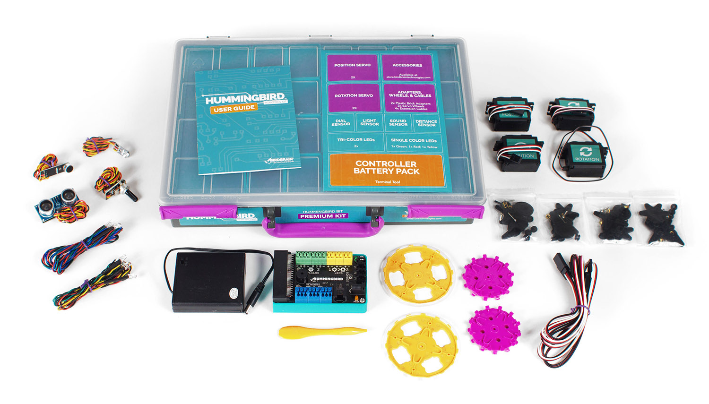

Environmental Systems Design Challenge
How can engineers use technology to help solve environmental problems?
Over the next 7 class days (40 minutes per day), your team will design, build, and program a fully integrated robotic system using the Hummingbird kit and micro:bit.
Your system must:
- Model an environmental concept
- Use real sensor data
- Demonstrate clear cause-and-effect relationships
- Function as one integrated system
- Reflect thoughtful engineering and strong aesthetics
This is a secondary-level design challenge. You are expected to think like engineers, test like scientists, and explain like environmental stewards.
Learning Goals
By the end of this lesson, you should be able to:
- Collect and interpret environmental data using sensors.
- Design a solution that addresses an environmental issue.
- Program cause-and-effect relationships using variables
- Build and refine a working system through iteration
- Clearly explain how your system models a real environmental process
Timeline:
- Day 1 - 2: Brainstorming, environmental focus selection, system sketch
- Day 2 - 3: Initial build + programming foundation
- Day 4: Midpoint check-in (basic functionality required)
- Day 5 - 6: Refinement, troubleshooting, aesthetic improvement
- Day 7 - 8: Presentations, video recording, reflection, reset
Daily momentum matters. Use your time wisely.

Begin by reading about The Challenge to learn more!